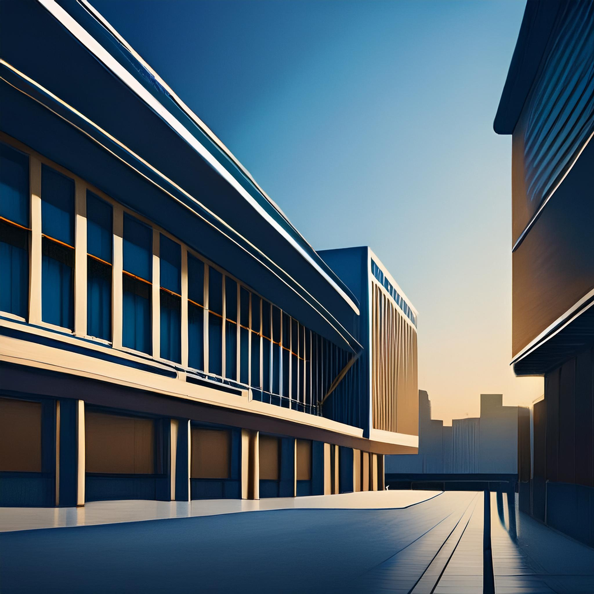

Welcome to an alternative realty were there is a new society like our current society but with some key differences. The purpose for this is for people who are tried of current society and wanting to start over from scratch. This is the official website for this organization where there are things such as the history, ways to donate to help expand, how to become a member and the requirements that are needed, and contacting a member for any questions that you may have.

Ian Sipes/Adobe Express
Explore a new world were things are more different then before. We hope this could be a useful tool to improve the quality of life for people that are having hard time and create an opportunity for people the were rejected in the old society. This can be a way to try something new or restart your life.
Ian Sipes/Craiyon,com